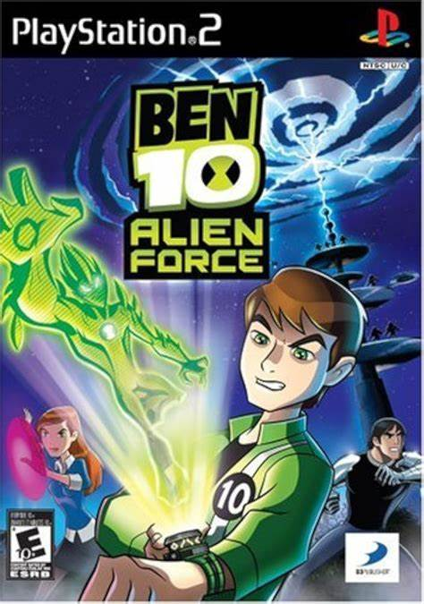

Jogos
Por seu grande sucesso mundo afora, Ben 10 possuia fama o suficiente para a produção de jogos sobre a franquia, diversos jogos foram lançados de todas as séries, e apesar da franquia ter mais de 10 jogos, vou falar dos melhores e mais nostalgicos jogos de Ben 10
Ben 10: Protector of Earth
Ben 10: Protector of Earth" é um jogo eletrônico baseado na popular série de desenhos animados "Ben 10". Foi desenvolvido pela High Voltage Software e publicado pela D3 Publisher. O jogo foi lançado em outubro de 2007 para várias plataformas, incluindo PlayStation 2, PlayStation Portable, Nintendo DS e Wii. O enredo do jogo segue Ben Tennyson, um jovem garoto que descobre um dispositivo alienígena chamado Omnitrix, que lhe dá a habilidade de se transformar em várias formas alienígenas. Ben é acompanhado por sua prima Gwen e pelo vovô Max, e juntos eles viajam pelo país combatendo vilões alienígenas.
Ben 10: Alien Force
"Ben 10: Alien Force" é um jogo eletrônico baseado na série de desenhos animados de mesmo nome, que é uma continuação da série original "Ben 10". O jogo foi desenvolvido pela Monkey Bar Games e publicado pela D3 Publisher. Foi lançado em outubro de 2008 para várias plataformas, incluindo Nintendo DS, PlayStation 2, PlayStation Portable e Wii. O enredo do jogo segue Ben Tennyson cinco anos após os eventos da série original. Agora com quinze anos de idade, Ben volta a usar o Omnitrix para lutar contra ameaças alienígenas enquanto procura por seu avô, Max, que desapareceu misteriosamente.
Ben 10: Vilgax Attacks
"Ben 10: Vilgax Attacks" é um jogo eletrônico baseado na popular série de desenhos animados "Ben 10: Alien Force". Foi desenvolvido pela Papaya Studio e publicado pela D3 Publisher. O jogo foi lançado em outubro de 2009 para várias plataformas, incluindo PlayStation 2, PlayStation Portable, Nintendo DS, Wii e Xbox 360. No enredo do jogo, Ben Tennyson está em uma nova aventura para impedir os planos malignos de Vilgax, um poderoso vilão intergaláctico. Vilgax está determinado a obter o poder do Omnitrix para conquistar a galáxia, e Ben e sua equipe devem detê-lo antes que seja tarde demais.
Ben 10: Cosmic Destruction
Ben 10: Ultimate Alien - Cosmic Destruction, em português Ben 10: Supremacia Alienígena - Destruição Cósmica, é o quinto videogame da série Ben 10, com base em Ben 10: Supremacia Alienígena. O desenvolvimento do jogo foi anunciado pela D3 Publisher em 5 de maio de 2010,[1] e lançado em 5 de outubro do mesmo ano. No jogo, o personagem principal Ben Tennyson viaja pelo mundo, passando por locais famosos como Tóquio, Paris, a Grande Muralha da China, a Floresta Amazônica e Roma, para encontrar as componentes de um antigo artefato alienígena e assim salvar a Terra da destruição iminente por uma misteriosa tempestade cósmica.
Ben 10: Omniverse
Os jogadores irão experimentar a emoção de "Ben 10: Omniverse" em um novo jogo de ação, onde descobre que os eventos incontáveis do passado estão afetando o presente. Jogando como Ben adolescente e Ben jovem junto ao seu novo parceiro Rook para derrotar os planos malignos de Malware, em uma história épica que se estende por dois períodos de tempo! Com 16 alienígenas à sua disposição, incluindo novos alienígenas como Bloxx, Shocksquatch e Gravattack, e lutar em 11 níveis cheios de ação (18 no DS e 3DS) em toda a cidade subterrânea alienígena Cidade de Baixo e outros lugares inspirados pelo show.
Ben 10: Omniverse 2

Em Ben 10: Omniverse 2, os jogadores são capazes de controlar Ben Tennyson em uma nova aventura. é o mais recente capítulo da franquia mundial top selling da D3Publisher e do Cartoon Network Enterprises, que coloca os jogadores em uma aventura totalmente nova com Ben e suas formas alienígenas do Omnitrix enquanto ele luta contra uma nova ameaça galáctica, os Inkursianos. Indo para a Terra com seu parceiro Azmuth, criador do Omnitrix, os dois lutam em uma guerra intergalática contra os Inkursianos para tentar derrotar o Imperador Milleous. Os jogadores terão de enfrentar novos desafios, incluindo perseguições e sequências de escape, assim como um ataque de batalhas contra as forças do mal.